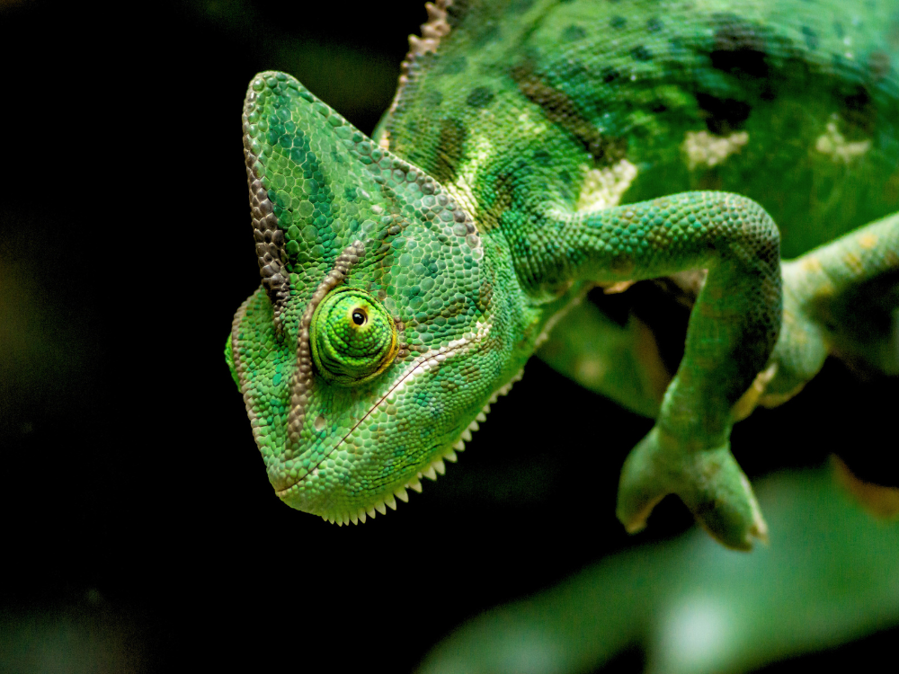

O camaleão é uma é um réptil da família chamaeleonidae, famoso pela sua abilidade de trocar de cor, por conseguir mexer os olhos de forma independente e sua longa língua capaz de pegwar a presas com precisão e agilide.

Existem cerca de 214 espécies de camaleão, dentre elas tem aas mias famosas que são: 1. Camaleão-pantera (Furcifer pardalis) Famoso pela variedade de cores vibrantes, o macho tem as cores mais vibrantes e belas de todos os camaleões. Ele é nativo de Madagascar.
terceiro paragrafo